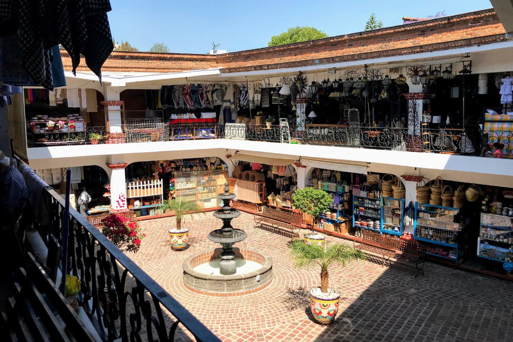
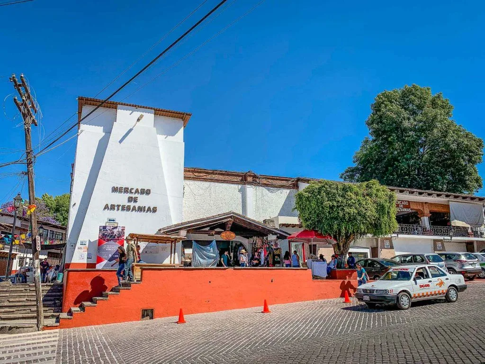

El Mercado de Artesanías de Valle de Bravo es uno de los mejores lugares para comprar cerámica, tejidos mazahuas y otomíes, hierro forjado y otras piezas tradicionales, abierto todos los días de 11:00 a 19:00 h.
¿Qué encontrarás?
*El mercado reúne artesanías locales y de otras regiones del país, con una fuerte presencia de comunidades mazahuas, otomíes y matlatzincas.
Las piezas más comunes incluyen:
*Cerámica de barro y cerámica de alta temperatura
*Hierro forjado
*Tejidos y bordados tradicionales, especialmente mazahuas y otomíes.
*Deshilados y cestería de ocoxal.
*Madera tallada, ebanistería fina y muebles artesanales.

*Estas artesanías transmiten la herencia cultural de la región y son ideales como recuerdos o regalos.
Ubicación y acceso
*El mercado se encuentra en Benito Juárez esquina Peñuelas, Centro, Valle de Bravo.
*Está a menos de 10 minutos caminando desde el kiosco del centro
Lugares cercanos para complementar tu visita
*Plaza Mazahua: a unos pasos del mercado; destaca por textiles bordados, deshilados, tapetes, colchas y manteles.
*Centro Ceramista: a menos de 10 minutos a pie; especializado en vajillas, macetas y cerámica con más de 40 años de trayectoria.
¿Por qué vale la pena visitarlo?
*Es un espacio creado para fomentar y difundir el trabajo artesanal local.
*Reúne artesanías de toda la República, especialmente de Michoacán, Guerrero y Jalisco además del Estado de México.
*Permite conocer de cerca el trabajo de artesanas y artesanos que preservan técnicas tradicionales.
